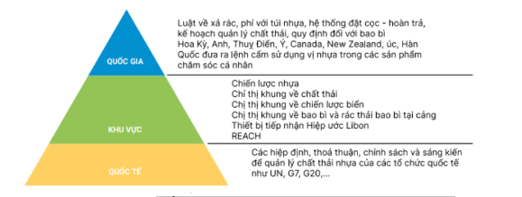
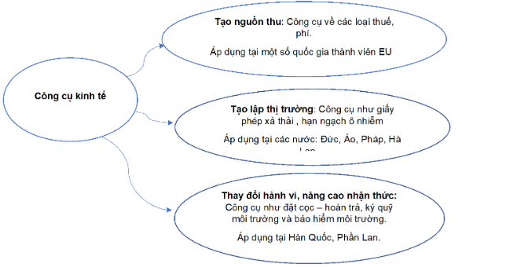
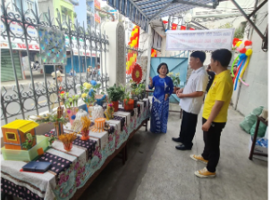
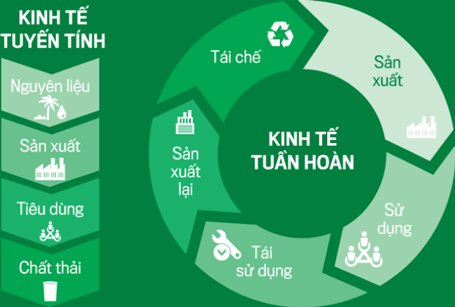
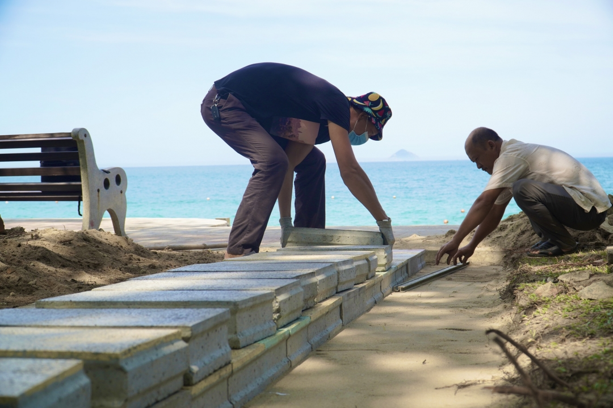
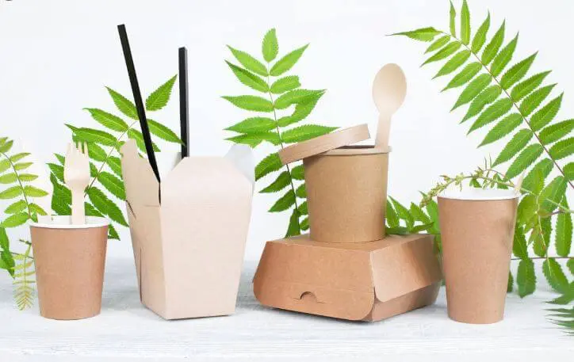

Chất Thải Nhựa


- Hạn chế tối đa việc sử dụng đồ nhựa 1 lần.
- Thực hiện nghiêm túc các hoạt động thu gom, phân loại chất thải nhựa.
- Tái sử dụng đồ nhựa và túi nilong an toàn nhiều lần nhất có thể.
- Tuyên truyền với người thân, bạn bè về tác hại và cách giảm chất thải nhựa.
- Chủ động lựa chọn các sản phẩm thay thế thân thiện môi trường.
- Ủng hộ các sản phẩm làm từ nhựa tái chế.
- Thu gom vỏ bao bì, chai thuốc trên đồng ruộng để tái chế.
- Doanh nghiệp đa quốc gia và tổ chức phi chính phủ ủng hộ Hiệp ước toàn cầu về ô nhiễm nhựa.
- Tại New York, Mỹ, có 84 tổ chức, bao gồm các doanh nghiệp đa quốc gia, tổ chức tài chính và tổ chức phi chính phủ (NGO) họp để chia sẻ tầm nhìn và thảo luận về Hiệp ước toàn cầu nhằm chấm dứt ô nhiễm nhựa. Hiệp ước đặt ra các mục tiêu, quy tắc để giảm thiểu sản xuất và sử dụng nhựa, thúc đẩy kinh tế tuần hoàn, tăng cường tái chế sản phẩm nhựa, ngăn chặn thất thoát rác nhựa lớn và hạt vi nhựa vào môi trường. Quỹ Ellen MacArthur và WWF đã khởi xướng một mạng lưới doanh nghiệp tạo ra sự hợp tác và ủng hộ cho Hiệp ước toàn cầu. Về phía Việt Nam, Thủ tướng Chính phủ đã ban hành Quyết định số 1407/QĐ-TTg phê duyệt Đề án Việt Nam chủ động chuẩn bị và tham gia xây dựng Thỏa thuận toàn cầu về ô nhiễm nhựa đại dương của Ủy ban đàm phán liên Chính phủ (INC).
=> Thông qua sự kiện trên, các tổ chức phi chính phủ đã thể hiện rõ cam kết hỗ trợ thúc đẩy các biện pháp hạn chế chất thải nhựa. Dưới đây là một số biện pháp mà Hiệp ước toàn cầu đề cập để giảm thiểu ô nhiễm nhựa:
+ Đưa ra các biện pháp ngăn chặn thất thoát và rò rỉ nhựa từ hệ thống sản xuất và sử dụng nhựa, đặc biệt là tại các khu vực như các đại dương và môi trường nước. Thiết lập quy tắc và chính sách nghiêm ngặt liên quan đến bao bì nhựa, như giảm sử dụng bao bì một lần và thúc đẩy sử dụng bao bì tái chế. Phát triển hệ thống thu gom rác thải nhựa tại các khu vực cần thiết, đặc biệt là ở những vùng ven biển và các khu vực có nguy cơ lớn về rò rỉ nhựa.
+ Đầu tư vào các công nghệ xanh để thúc đẩy sự tiến bộ trong giảm ô nhiễm nhựa và tạo ra các sản phẩm thân thiện với môi trường.
+ Tạo ra môi trường hợp tác và ủng hộ từ cộng đồng quốc tế để đối mặt với vấn đề ô nhiễm nhựa và chia sẻ giải pháp hiệu quả.
Theo “Báo cáo đánh giá hiện trạng về giới (GESI) trong chuỗi giá trị nhựa tại Việt Nam” của (NPAP). Kết quả nghiên cứu cho thấy phụ nữ chịu ảnh hưởng nhiều hơn bởi việc sử dụng sản phẩm nhựa và giữ trách nhiệm chính trong quản lý công việc nội trợ hàng ngày.
=> Đề xuất tích hợp các giải pháp đơn lẻ thành nền kinh tế tuần hoàn nhựa bền vững và toàn diện. Tận dụng nguồn lực từ nhà hoạch định chính sách, chuyên gia, doanh nghiệp và đối tác phát triển. Đề cao sự cần thiết của việc lồng ghép các vấn đề bình đẳng giới và phát triển toàn diện trong kế hoạch hành động chung.
=> Những tổ chức này đóng vai trò quan trọng trong việc đưa ra quan điểm đa dạng, cung cấp thông tin chuyên sâu, và hỗ trợ trong việc xây dựng giải pháp toàn diện cho vấn đề quản lý chất thải nhựa từ góc độ giới và phát triển toàn diện:
- Tăng cường giáo dục và nhận thức về vấn đề chất thải nhựa trong cộng đồng, đặc biệt là tăng cường nhận thức về ảnh hưởng khác nhau của chất thải nhựa đối với phụ nữ và cộng đồng.
- Khuyến khích sử dụng vật liệu thay thế cho nhựa và hỗ trợ quy trình tái chế để giảm lượng chất thải nhựa.
- Khuyến khích việc phát triển chương trình đổi mới và tái sử dụng sản phẩm nhựa để giảm lượng chất thải từ sản xuất mới.
- Hỗ trợ nghiên cứu và triển khai công nghệ mới để giảm lượng chất thải nhựa và tạo ra các sản phẩm thân thiện với môi trường.
=> Mục đích: tạo ra một hệ thống quản lý chất thải nhựa bền vững, tăng cường bình đẳng giới và phát triển toàn diện, đồng thời giảm thiểu tác động tiêu cực đối với phụ nữ và cộng đồng.
=> Đến năm 2025, tái sử dụng, tái chế, xử lý 85% lượng chất thải nhựa phát sinh; giảm thiểu 50% rác thải nhựa trên biển và đại dương so với giai đoạn trước đây; giảm dần mức sản xuất và sử dụng túi ni lông khó phân hủy và sản phẩm nhựa dùng một lần trong sinh hoạt; Ít nhất 80% chất thải chăn nuôi và 60% phụ phẩm nông nghiệp phải được thu gom, tái sử dụng, tái chế thành các nguyên liệu, nhiên liệu và các sản phẩm thân thiện với môi trường; Giảm thiểu lượng carbon trong quá trình sản xuất
- Tháng 6-2019, Tổ chức Tái chế bao bì Việt Nam (PRO Việt Nam) được sáng lập với mục tiêu thúc đẩy nền kinh tế tuần hoàn để biến rác thải thành tài nguyên thay vì thải ra môi trường.
+ Thực hiện các chiến dịch xã hội xanh: tham gia vào các chiến dịch xã hội xanh để tạo ra sự nhận thức và thay đổi hành vi sử dụng bao bì của cộng đồng.
+ Phát triển bao bì sinh học phân hủy: Nghiên cứu và phát triển bao bì từ các nguyên liệu sinh học phân hủy để giảm tác động môi trường khi bị vứt bỏ.
Chương trình Đối tác Hành động Quốc gia về nhựa (NPAP) tại Việt Nam được thành lập trên cơ sở thỏa thuận hợp tác giữa chính phủ và đối tác quốc gia khác để chuyển đổi cam kết về rác thải nhựa thành hành động cụ thể.
=> NPAP đã đạt được một số kết quả tích cực sau hai năm triển khai. Chương trình đóng góp vào việc tăng cường thực thi các chính sách và quy định về quản lý rác thải nhựa thông qua hỗ trợ xây dựng nội dung Luật Bảo vệ môi trường 2020 và Thông tư hướng dẫn thực hiện. Họ cũng đã thúc đẩy sự thống nhất trong hành động của các cấp, các ngành và sự ủng hộ từ cộng đồng.
=> NPAP đã hỗ trợ Việt Nam tham gia Thỏa thuận Toàn cầu về chấm dứt ô nhiễm bằng cách huy động nguồn lực và hỗ trợ từ các tổ chức quốc tế và tổ chức phi chính phủ.
Các tổ chức nghiên cứu khoa học thường tham gia vào việc đề xuất và thực hiện các biện pháp hạn chế rác thải nhựa dựa trên nghiên cứu và phân tích khoa học. Dưới đây là một số biện pháp được đưa ra:
+ Thực hiện nghiên cứu về ảnh hưởng của chất thải nhựa đối với môi trường, sức khỏe con người và sinh thái.
+ Nghiên cứu và phát triển vật liệu sinh học phân hủy để thay thế cho việc sản xuất và sử dụng nhựa.
+ Nghiên cứu và thúc đẩy sự hợp tác trong chuỗi cung ứng để đảm bảo sự bền vững trong sản xuất và đóng gói.
+ Tổ chức hội thảo, hội nghị để chia sẻ kiến thức và nhận thức về vấn đề rác thải nhựa.
+ Phối hợp chặt chẽ với các doanh nghiệp và chính phủ eddeer thúc đẩy việc thực thi chính sách và giải pháp hạn chế rác thải nhựa.
+ Tham gia vào việc đề xuất và phát triển chính sách và quy tắc mới để giảm thiểu sự tiêu thịu rác thải nhựa.
+ Thực hiện các chiến dịch giáo dục và nhận thức cộng đồng về tác động của rác thải nhựa và cách hạn chế nó.
+ Phát triển các hệ thống quản lý chất thải hiệu quả và thúc đẩy tái chế nhựa.
=> Một số giải pháp cho rác thải nhựa được đưa ra:
+ Ưu tiên sự phát triển của kinh tế tuần hoàn và công nghiệp tái chế để giảm lượng chất thải nhựa từ quá trình sản xuất và sử dụng.
+ Áp dụng các biện pháp an toàn lao động và kiểm soát chặt chẽ quá trình sản xuất nhựa để giảm rủi ro sức khỏe cho người lao động và cộng đồng.
+ Chủ động tham gia và cam kết vào các Hiệp ước toàn cầu về ô nhiễm nhựa để hỗ trợ quy tắc và mục tiêu giảm thiểu chất thải nhựa.
Liên Hợp Quốc, các quốc gia, tổ chức và cộng đồng quốc tế triển khai nhiều hành động và nỗ lực để giải quyết ô nhiễm chất thải nhựa. Các quốc gia, vùng lãnh thổ và các tổ chức quốc tế đã ban hành các tuyên bố, công ước và cam kết để giảm thiểu ô nhiễm chất thải nói chung và CTN nói riêng. Chính sách và sáng kiến quản lý CTN thông qua các hình thức tự nguyện và ràng buộc về mặt pháp lý đã và đang được thực hiện đồng bộ ở cấp toàn cầu, khu vực và quốc gia.
Các quốc gia G7 và G20 đã đưa ra các sáng kiến, tuyên bố và cam kết liên quan đến quản lý các nguồn chất thải nhựa trên đất liền và trên biển. Chương trình Đối tác Hành động Toàn cầu về nhựa (GPAP) được thành lập 2018 bởi Diễn đàn Kinh tế Thế Giới để tập hợp các Chính phủ, doanh nghiệp và xã hội nhân sự nhằm biến các cam kết thành hành động giải quyết các vấn đề ô nhiễm nhựa cấp quốc gia và toàn cầu.
Chương trình GPAP tại Việt Nam hỗ trợ việc xây dựng và ủng hộ triển khai các đề án, chiến lược phát triển kinh tế của Việt Nam.
Các quốc gia thành viên của Diễn đàn hợp tác kinh tế Châu Á – Thái Bình Dương (APEC) đã công bố hành động về rác thải biển nhằm thúc đẩy các nghiên cứu, đổi mới các phương pháp, giải pháp để ngăn ngừa và giảm rác thải biển nói chung, rác thải nhựa nói riêng.
=> Tăng khả năng tiếp cận tài chính, tạo điều kiện cho khu vực tư nhân tham gia đầu tư.
=> Lập thị trường trong các ngành công nghiệp và hoạt động phòng ngừa, quản lý rác thải biển.
Khung hành động về chất thải nhựa đại dương của ASEAN được hình thành vào năm 2017 và được chính thức thông qua bởi các Bộ trưởng và các đại diện của csc cơ quan quản lý về môi trường và biển đảo.
Hầu hết các quốc gia thành viên EU và các quốc gia khác như Hoa Kỳ, Canada, New Zealand, Australia và Ấn Độ đã đưa ra lệnh cấm đối với sản phẩm nhựa dùng một lần hoặc đã ban hành các biện pháp thỏa thuận tự nguyện hoặc bắt buộc với doanh nghiệp để loại bỏ chúng.
Ngoài ra một số quốc gia trên thể giới đã áp dụng thành công công cụ kinh tế trong quản lý chất thải nhựa gồm: Đan Mạch, Ireland, Hàn Quốc,… và tạo nguồn thu cho ngân sách nhà nước, điều chỉnh hành vi của các tổ chức, cá nhân trong xã hội.
Công cụ kinh tế được chia thành ba nhóm chính:
Năm 2022, UBND TP.HCM ban hành quyết định về tăng cường công tác quản lý, tái sử dụng, tái chế và xử lý chất thải nhựa trên địa bàn thành phố giai đoạn 2022 - 2025.
Đẩy mạnh phân loại rác sinh hoạt tại nguồn
Phát động tổ chức, địa phương tổ chức phong trào, tuyên truyền về tác hại, kết hợp các hoạt động thu gom, tái chế.
TP.HCM sẽ tăng cường xử lý hành vi vứt chất thải nhựa nơi công cộng.
Từ năm 2016, TP. Hồ Chí Minh đã có hướng chuyển đổi xử lý rác thải thành đốt phát điện.
Phường Tân Thới Nhất, quận 12: tổ chức nhiều buổi tuyên truyền và hướng dẫn phân loại chất thải rắn tại nguồn, giảm sử dụng túi nylon trên địa bàn , phường đã phát hành 12.000 tờ bướm tuyên truyền về tác hại việc sử dụng túi nylon. Đến chợ, siêu thị,...yêu cầu cam kết giảm sử dụng túi nylon, ưu tiên dùng túi thân thiện môi trường. Vận động hộ dân, tiểu thương sử dụng túi làm từ vật liệu có thể tái sử dụng nhiều lần, túi nhựa truyền thống…
Mặt trận khu phố 6, phường Phạm Ngũ Lão, quận 1: đổi rác thải nhựa lấy quà; tái sử dụng đồ nhựa như dùng chai nhựa để trồng cây xanh.
Huyện Bình Chánh: chương trình đổi rác thải nhựa lấy quà, “biến rác thành tiền”, đổi bao vỏ chai thuốc bảo vệ thực vật lấy quà...
1/7/2019, ban hành luật quản lý rác thải sinh hoạt: những người không giao rác thải theo thời gian, địa điểm, phương pháp đã chỉ định và từ chối thực hiện các sửa đổi cần thiết sẽ bị phạt từ 50 đến 200 Nhân dân tệ đối với cá nhân và từ 500 đến 2000 Nhân dân tệ đối với tổ chức.
Hiệu quả: Đến năm 2021, “ô nhiễm trắng” đã giảm 50% và rác thải ở các khu dân cư ở Thượng Hải đã giảm 29%
Tokyo đã xây dựng những nhà máy xử lý chất thải ở trung tâm thành phố.. Họ càng tạo ra nhiều rác thải thì càng có nhiều nhà máy đốt rác được xây dựng trong cộng đồng của họ và những hậu quả (kinh tế, vật chất và tinh thần) cuối cùng do họ gánh chịu.Chủ trương “rác là tài nguyên bị đặt sai chỗ”
Hiệu quả: Với sự giúp đỡ của chính phủ, doanh nghiệp và người dân, chưa đến 20% rác thải sinh hoạt của Tokyo cần được đốt và chôn lấp
Bắt đầu vào năm 1995, Chương trình cho vay tái chế Florida ( The Florida Recycling Loan Program)cung cấp các khoản vay lãi suất cố định với lãi suất lên tới 2% dưới mức cơ bản. Số tiền vay tối đa là 200.000 USD. Chương trình đã ký kết 27 khoản vay với tổng trị giá hơn 3,9 triệu USD.
The Recycling Market Development Zone (RMDZ) loan program để hỗ trợ các nhà sản xuất tái chế tài trợ máy móc, thiết bị và các chi phí phụ trợ để xây dựng địa điểm và mở rộng tại California (Bộ luật Tài nguyên Công cộng, mục 42023.1).
Những sản phẩm của Thiên Long đang định hướng theo tiêu chuẩn Xanh như ruột bút được tái sử dụng, vỏ bút được làm từ những chế phẩm sinh học như vỏ trấu, vỏ rơm ra, bột sắn....
Trong năm 2022, nhà máy nhựa tái chế Duy Tân đã tái chế hơn 1,3 tỷ chai nhựa được thu gom trong nước.
Công ty Cổ phần Năng lượng Resa: nhiệt phân và bê tông hóa rác nhựa (nhốt nhựa), xây dựng dây chuyền chiết xuất dầu, quy mô pilot; bước đầu sản xuất ra dầu nhiệt phân từ rác nhựa. Loại dầu này có đặc tính tương đương với dầu diesel và dầu hỏa, có thể dùng làm nhiên liệu đốt lò, chạy động cơ diesel.
Các doanh nghiệp liên tục ra mắt sản phẩm thay thế nhựa: ống hút chất liệu tự nhiên, túi tự hủy sinh học, bình nước từ vật liệu tái chế, túi đi chợ thân thiện môi trường, giấy gói thực phẩm, bộ dụng cụ tự hủy để đi du lịch,Bàn chải đánh răng tự phân hủy
